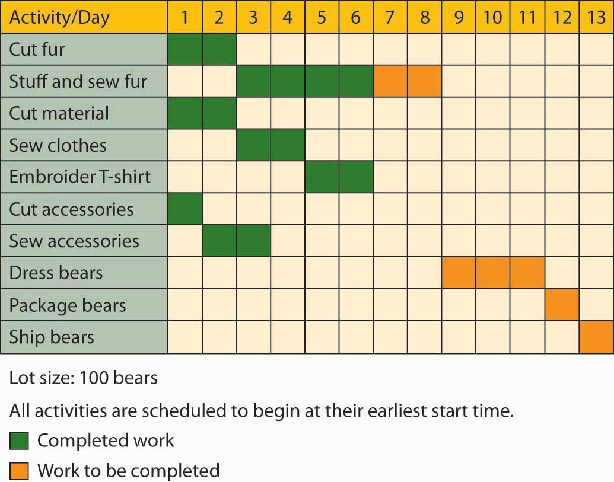
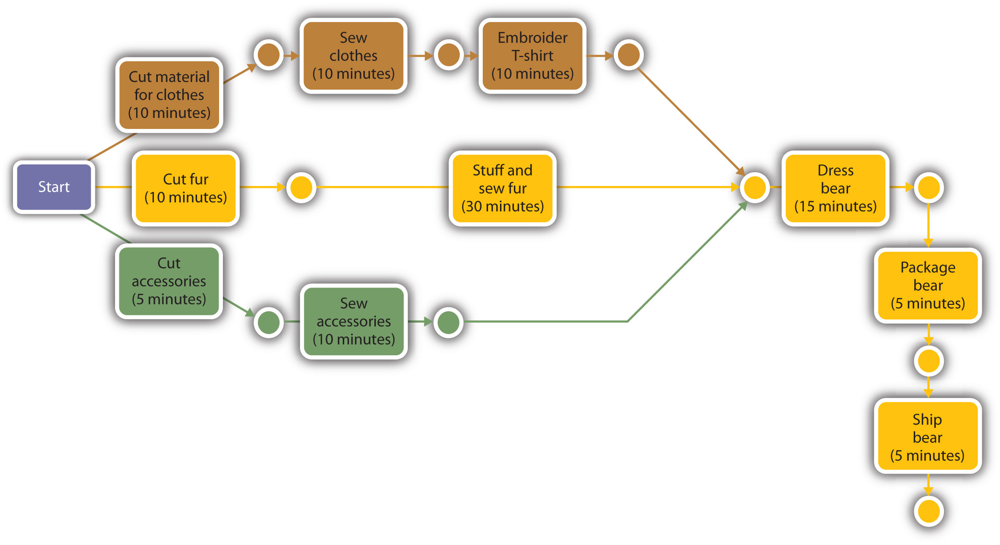

Because they also need to control the timing of all operations, managers set up schedules: They select jobs to be performed during the production process, assign tasks to work groups, set timetables for the completion of tasks, and make sure that resources will be available when and where they’re needed. There are a number of scheduling techniques. We’ll focus on two of the most common—Gantt and PERT charts.
A Gantt chartGraphical tool for determining the status of projects., named after the designer, Henry Gantt, is an easy-to-use graphical tool that helps operations managers determine the status of projects. Let’s say that you’re in charge of making the “hiking bear” that we ordered earlier from the Vermont Teddy Bear Company. Figure 11.7 "Gantt Chart for Vermont Teddy Bear" is a Gantt chart for the production of one hundred of these bears. As you can see, it shows that several activities must be completed before the bears are dressed: the fur has to be cut, stuffed, and sewn; and the clothes and accessories must be made. Our Gantt chart tells us that by day six, all accessories and clothing have been made. The stuffing and sewing, however (which must be finished before the bears are dressed), isn’t scheduled for completion until the end of day eight. As operations manager, you’ll have to pay close attention to the progress of the stuffing and sewing operations to ensure that finished products are ready for shipment by their scheduled date.
Figure 11.7 Gantt Chart for Vermont Teddy Bear
Gantt charts are useful when the production process is fairly simple and the activities aren’t interrelated. For more complex schedules, operations managers may use PERT chartsTool for diagramming the activities required to produce a product, specifying the time required to perform each activity in the process, and organizing activities in the most efficient sequence.. PERT (which stands for Program Evaluation and Review Technique) is designed to diagram the activities required to produce a good, specify the time required to perform each activity in the process, and organize activities in the most efficient sequence. It also identifies a critical path: the sequence of activities that will entail the greatest amount of time. Figure 11.8 "PERT Chart for Vermont Teddy Bear" is a PERT diagram showing the same process for producing one “hiker” bear at Vermont Teddy Bear.
Figure 11.8 PERT Chart for Vermont Teddy Bear
Our PERT chart shows how the activities involved in making a single bear are related. It indicates that the production process begins at the cutting station. Next, the fur that’s been cut for this particular bear moves first to the stuffing and sewing stations and then to the dressing station. At the same time that its fur is moving through this sequence of steps, the bear’s clothes are being cut and sewn and its T-shirt is being embroidered. Its backpack and tent accessories are also being made at the same time. Note that fur, clothes, and accessories all meet at the dressing station, where the bear is dressed and outfitted with its backpack. Finally, the finished bear is packaged and shipped to the customer’s house.
What was the critical path in this process? The path that took the longest amount of time was the sequence that included cutting, stuffing, dressing, packaging, and shipping—a sequence of steps taking sixty-five minutes. If you wanted to produce a bear more quickly, you’d have to save time on this path. Even if you saved the time on any of the other paths—say, the sequence of steps involved in cutting, sewing, and embroidering the bear’s clothes—you still wouldn’t finish the entire job any sooner: the finished clothes would just have to wait for the fur to be stuffed and sewn and moved to the dressing station. In other words, we can gain efficiency only by improving our performance on one or more of the activities along the critical path.
(AACSB) Analysis
Earning a college degree requires not only a lot of hard work but also, as you know, a lot of planning. You must, for example, complete a specified number of credits and take many required courses, particularly in your major. Deciding which courses to take and when to take them can be complicated when some of them have prerequisites. A PERT chart—which diagrams the activities required to complete a goal—might help you determine the order in which you should take courses for your major. Pick a major that interests you and find out what courses you’d need to complete it. Then prepare a PERT chart showing all the courses you’d plan to take each semester to complete your major. (For example, if you select the accounting major, include only accounting courses; don’t include your other business courses or your elective courses.) Identify the critical path laid out in your chart. What happens if you fail to take one of your critical-path courses on time?